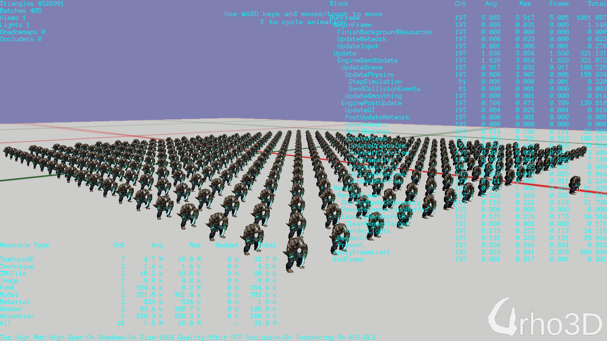
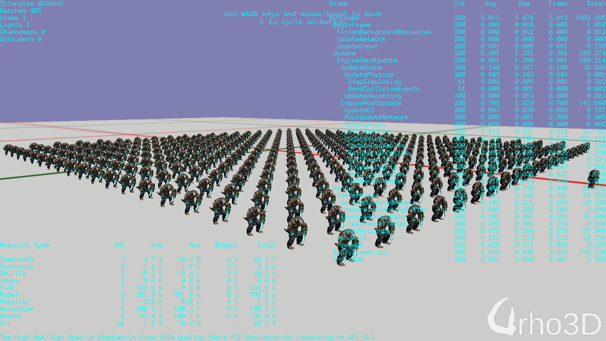
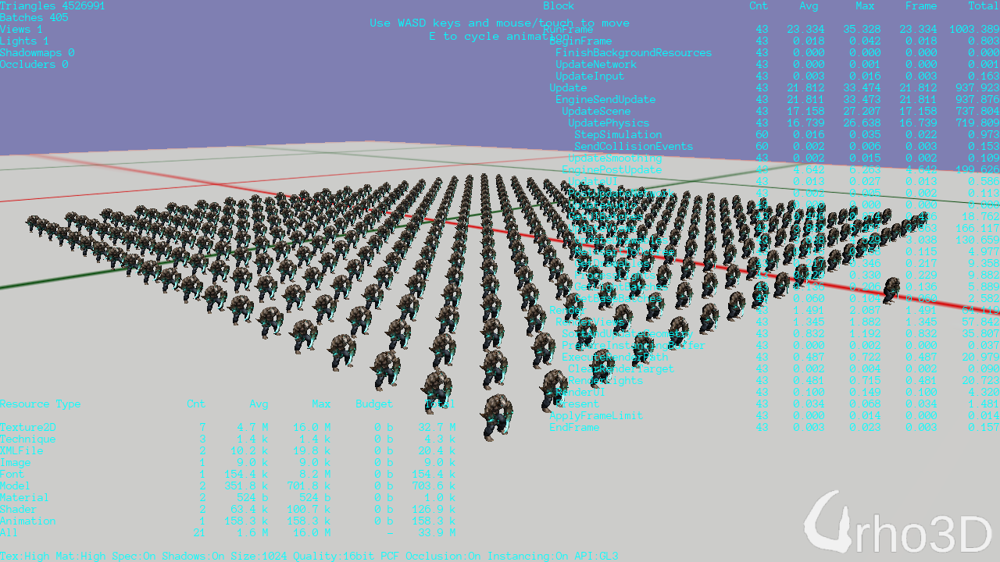
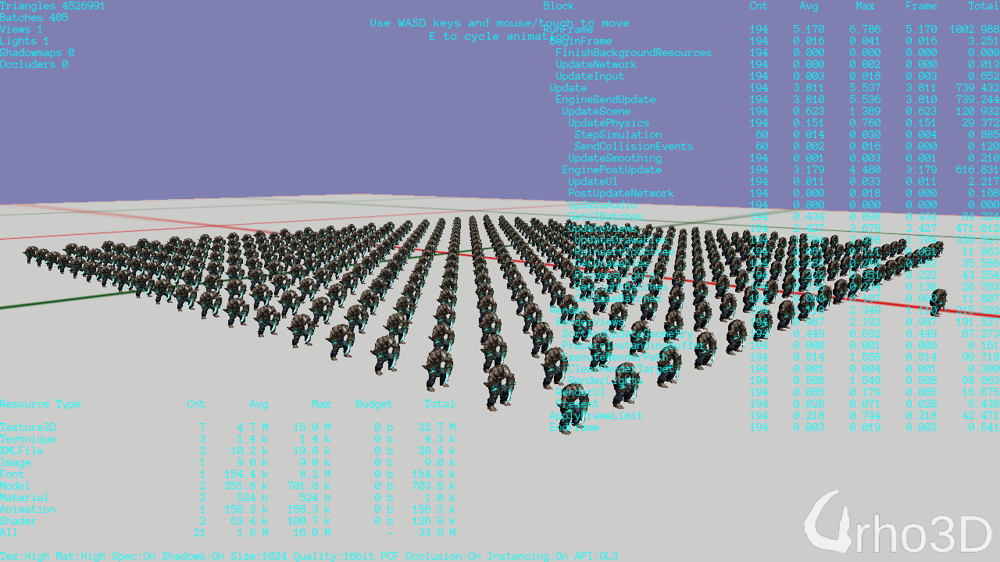

Lumak
Just another one of those processes that I was curious about and wanted to see if it made any difference to create an animation controller proxy for all other characters to use the same animation.
Tested with 400 characters.
Release build:
w/o proxy

w/ proxy

Debug build:
w/o proxy

w/ proxy

Makes a slight difference in Release and more significant in Debug. Any thoughts?